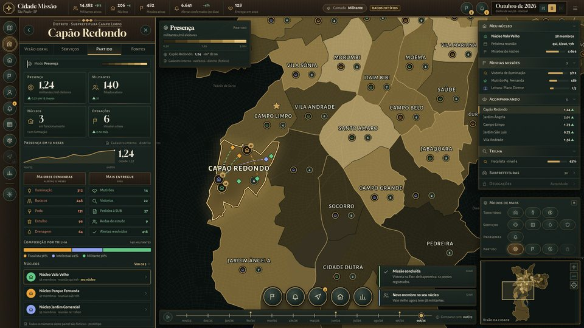
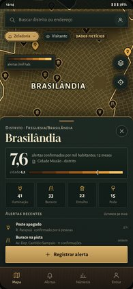
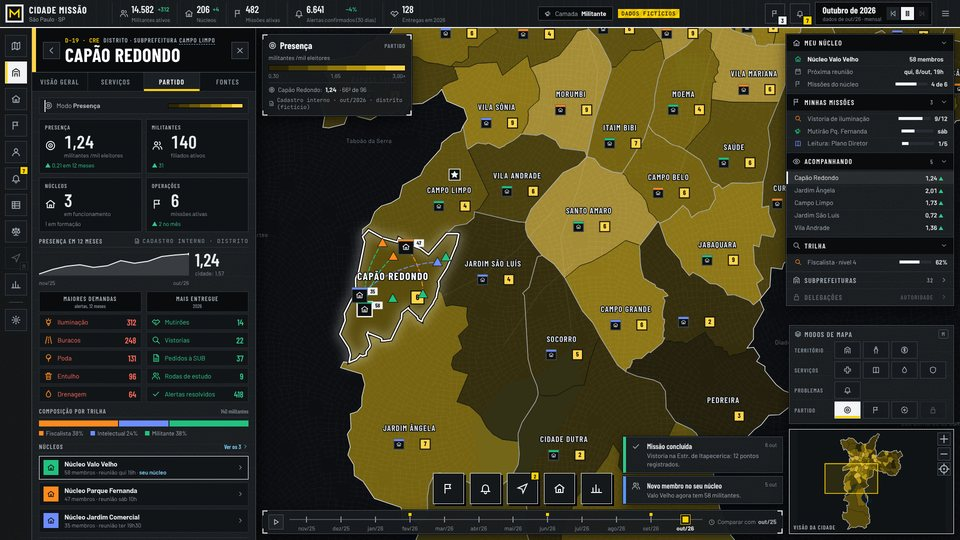
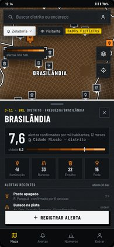
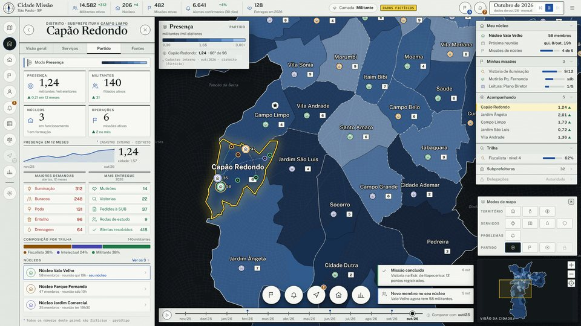
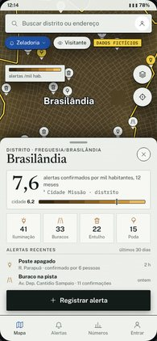
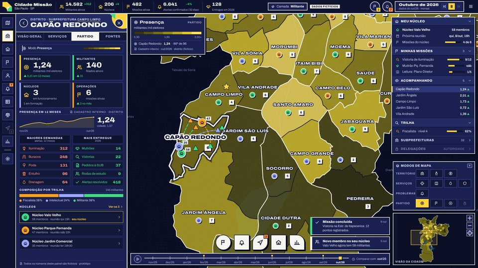

A
Gabinete Paulistano
Latão, jacarandá e couro verde: a mesa de despacho de um gabinete art déco, redesenhada para 2026.
Cada direção tem uma página própria com as quatro telas pedidas (duas de computador, duas de celular), uma prancha de componentes e estados, os tokens, o estilo do Google Maps em JSON, as regras de coropleta e zoom, a especificação dos componentes, acessibilidade, riscos e o pacote pronto para o agente construtor.
Mesmos dados, mesmas telas e mesma estrutura de componentes, para que a comparação seja só de material, tom e tipografia. Clique numa imagem para abrir a direção.


Latão, jacarandá e couro verde: a mesa de despacho de um gabinete art déco, redesenhada para 2026.


Concreto aparente, placas brancas e a sinalização do Metrô: a sala de controle da cidade.


Folhas de atlas sobre o mapa noturno: filetes de tinta, notas de fonte e marca-texto.

Concretismo paulista e piso das calçadas: planos chapados, sombras duras e letra larga.
A checagem feita antes de desenhar. Nenhum eixo se repete entre duas direções; A e B são as duas escuras, mas uma é quente e ornamental e a outra é fria e técnica.
| A · Gabinete Paulistano | B · Central de Operações | C · Atlas Cívico | D · Concreto | |
|---|---|---|---|---|
| Material | latão, jacarandá, couro verde | concreto aparente, placas, grade técnica | papel cartográfico sobre mesa escura | planos chapados de cor, sem textura |
| Tom | solene, institucional | operacional, de serviço | editorial, transparente | mobilizador, enérgico |
| Tipografia | Gloock + Alegreya Sans (SC) | Barlow Condensed + Barlow + JetBrains Mono | Newsreader + Public Sans + IBM Plex Mono | Archivo variável (largura 62–125) |
| Painéis | escuros quentes, moldura dupla | grafite, cantos retos, marcas de canto | claros, filetes de tinta | azul-noite, borda creme, sombra dura |
| Forma dos botões | círculos com anel | quadrados (placas) | círculos de papel | círculo, quadrado e folha alternados |
Leitura de designer, não medição. “Risco” é o risco de a interface parecer jogo ou propaganda para quem a vê de fora.
| Critério | A · Gabinete Paulistano | B · Central de Operações | C · Atlas Cívico | D · Concreto |
|---|---|---|---|---|
| Identidade | Forte e institucional; lembra o Victoria 3 | Forte e urbana; muito paulistana | Sóbria; depende da tipografia | Muito forte; a mais memorável |
| Legibilidade do mapa | Boa; latão e Partido próximos | Muito boa; seleção por placa branca | Muito boa; painéis separam bem do mapa | Boa; coropleta saturada exige ajuste |
| Adequação ao celular | Média; texturas e serifa a simplificar | Boa; textura opcional | Boa; painel claro cansa à noite | Muito boa; sem textura, uma fonte |
| Esforço de construção | Alto (arte, ornamentos, marcadores) | Médio | Médio-baixo | Baixo |
| Risco de parecer jogo | Alto | Médio | Baixo | Médio |
| Risco de parecer propaganda | Baixo | Baixo | Muito baixo | Alto |
| Aderência ao Victoria 3 | Muito alta | Alta (estrutura igual, material outro) | Média | Média |
A Central de Operações (B) como base, com o tratamento de fontes e notas do Atlas Cívico (C) na camada Visitante.
B mantém tudo o que agradou no Victoria 3 (gaveta, trilho, outliner, contadores, minimapa) e troca o material de jogo por um vocabulário que o paulistano já lê no Metrô e nas placas de rua. Passa “organizado e sério” sem parecer palácio nem campanha, e roda bem no celular, porque a textura é opcional.
A camada pública é onde o partido mais precisa de credibilidade. Ali, as notas de fonte numeradas e a seleção em marca-texto de C reforçam a transparência sem mudar a estrutura.
A decisão é sua. Se a prioridade for a sensação de “jogo de estratégia”, A entrega mais. Se for alcance no celular e mobilização, D custa menos para construir.